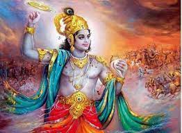

Lord Krishna was the highest Incarnation of the great Vishnu. He was the Purna Avatara. He had all the sixteen Kalas or rays of the Lord. He was a noble scion of the illustrious Yadava dynasty. He was the world-teacher. He was the one Lord of love. He was the lover of men. His enchanting form, with flute in hand, holds the heart of India captive in chains even today.
The purpose of the Krishna-Avatara was not only to destroy Adharma, but also to reveal to the world the magnificence of God. Sri Krishna was the symbol of the Absolute, the representation of the mighty Sovereign of the universe. In His well-adjusted, symmetrical conduct of life is portrayed the majestic perfection of God.
